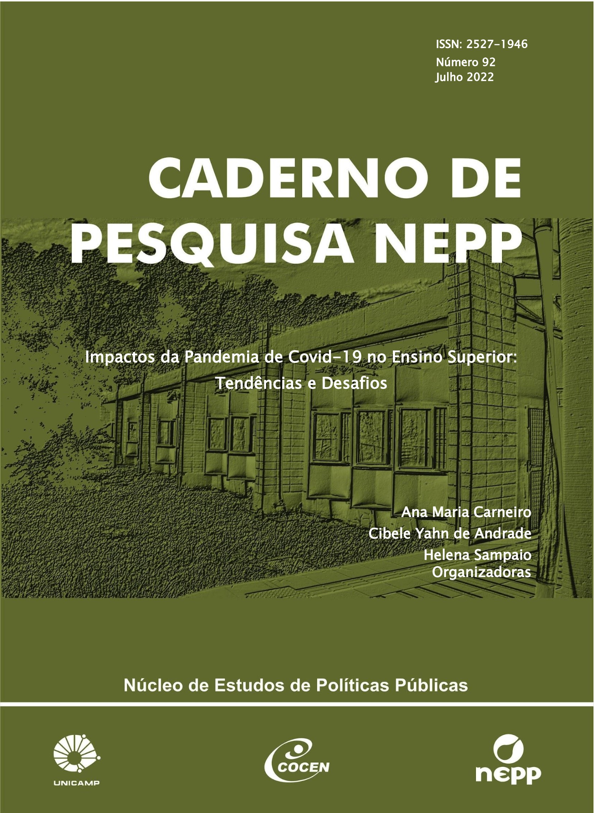
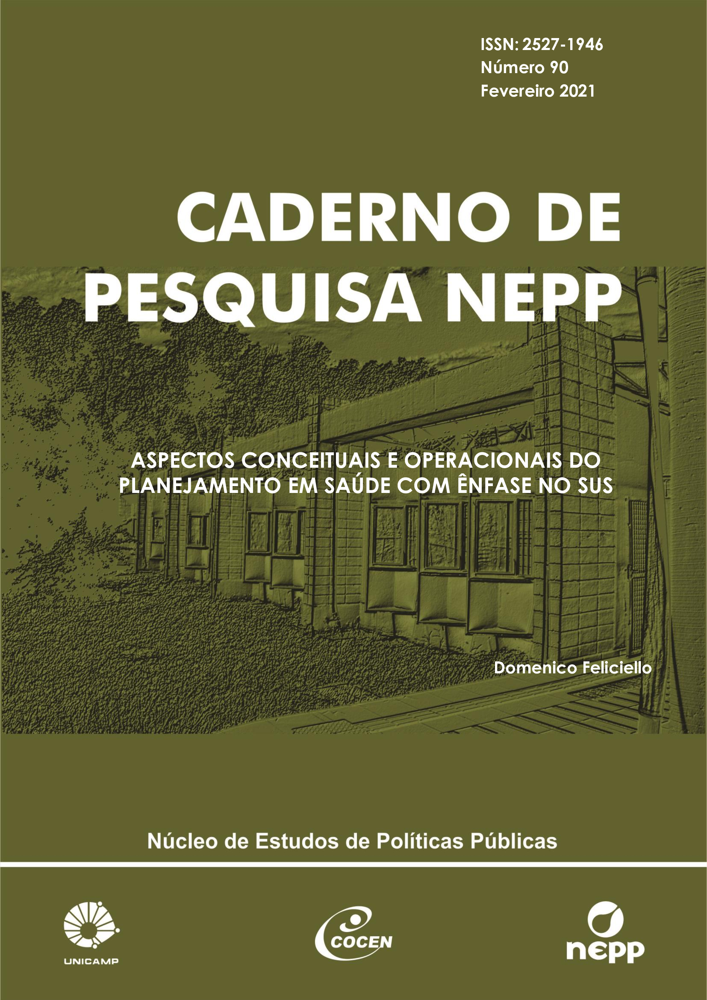

Livros
Contratualização de serviços de saúde: guia prático para gestores públicos e gerentes de serviços de saúde no SUS
2016
AcessarCadernos de Pesquisa

Impactos da pandemia de Covid-19 no ensino superior: tendências e desafios"
nº 92 - 2022
Acessar

Aspectos conceituais e operacionais do planejamento em saúde com enfase no SUS
nº 90 - 2021
Acessar